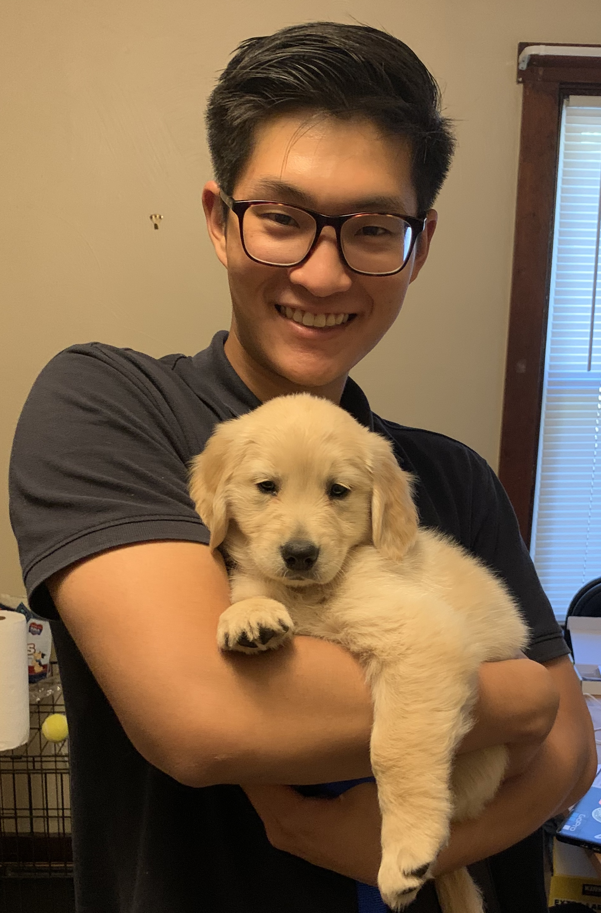

I am a Carnegie Mellon University Mechanical Engineering PhD student working in the RoboMechanics Lab, advised by Aaron Johnson. My research focuses on getting robots out of the lab setting and into the real world to perform useful tasks. The bulk of my research is focused on creating sample efficient reinforcement learning algorithms for autonomous wheeled navigation over extreme rough terrain, i.e. environments with rocks, stairs, or loose soil. I am also working on an environmental sampling project that involves desigining and programming robots to efficiently collect soil samples and sense soil contamination in large remote environments.
I received my bachelor's and master's degree at University of California, Santa Barbara. There, I worked with Francesco Bullo on motion planning for single and multi agent surveillance UAV systems.

When I'm not training robots, I'm training my dog "Mija".
CURRENT PROJECTS
RL for Rough Terrain Traversal
We are developing algorithms to make reinforcement learning more sample-efficient for autonomous driving over rough terrain (terrain with rocks, stairs, etc.)
more info>>
Soil Sampling Robot
We are designing and building robots that collect soil samples and measure soil contaminants to help us quantify the extent of contamination in large environments.
more info>>
Planning for Environmental Sampling
We are working on planning algorithms that choose sampling locations and travel paths to maximize information gain and minimize operation costs.
more info>>
PAST PROJECTS
Proprioceptive Contact Localization
Our proprioceptive contact localization method uses velocity constraints to localize contact. It only requires position and velocity signals.
more info>>
Isla
Isla is a quadrupedal robot that can roll on its body for more efficient locomotion.
more info>>
Multi-Agent Surveillance
This project focused on developing path planning algorithms for multi-agent surveillence systems with sparse communication constraints.
more info>>
Advance Imaging Drone
This drone can be used to find endangered birds. It is outfitted with ultrasonic and LiDAR sensors for spacial awareness and a thermal camera to locate heat signature.
more info>>